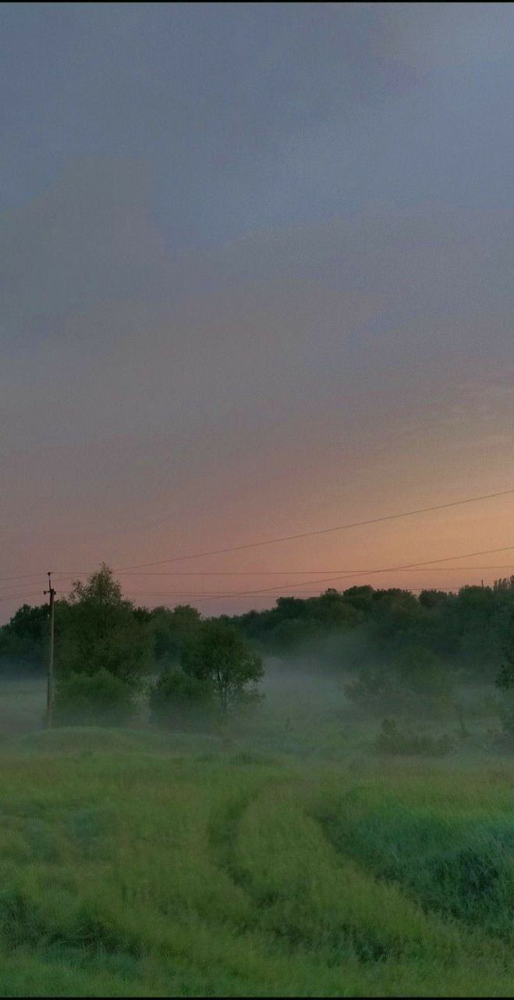

Про красу та вдячність
Вечірнє сонце, дякую за день!
Вечірнє сонце, дякую за втому.
За тих лісів просвітлень Едем
і за волошка в житі золотому.
За твій світанок, і за твій світ,
і за мої обпечені зеніти.
За те, що завтра хоче зеленити,
за те, що вчора спіткало дзвініння.
За небо у небі, за дитячий сміх.
За те, що можу і за те, що мушу.
Вечірнє сонце, дякую за всіх,
котрі нічим не опоганили душу.
За те, що завтра чекає своїх натхнень.
Що десь у світі дах ще не пролито.
Вечірнє сонце, дякую за день,
за цю потребу слова, як молитви.

Про плин часу
Життя йде і все без коректур.
І година летить, не стишує галопу.
Давно нема маркізі Помпадур,
і ми живемо вже після потопу.
Не знаю я, що буде після нас,
в які природа забереться шати.
Єдиний, хто не втомлюється – година.
А ми живі, нам треба поспішати.
Зробити щось, позбавити по собі,
а ми, нічого, – пройдемо, як тіні,
щоб тільки неба очі голубі
цю землю завжди бачили у цвітінні.
Щоб ці ліси не вимерли, як тур,
щоб ці слова не вичахли, як руди.
Життя йде і все без коректур,
і як напишеш, то вже й буде.
Але не бійся гострої строчки.
Прозрінь не бійся, бо вони як ліки.
Не бійся правди, хоч яка гірка,
не бійся смутків, хоч вони як ріки.
Людині бійся душу обманути,
бо в цьому схибиш – то вже навіку.
Про поезію та силу слова
Страшні слова, коли вони мовчать,
коли вони зненацька причаїлися,
коли не знаєш, з чого їх почати,
бо всі слова були вже чиїмись.
Хтось ними плакав, мучившись, болів,
з них почав і ними ж і завершивши.
Людей мільярди і мільярди слів,
а ти їх маєш вимовити вперше!
Все повторювалося: і краса, і потворність.
Усе було: асфальті та спориші.
Поезія – це завжди неповторність,
якесь безсмертне прикмети до душі.